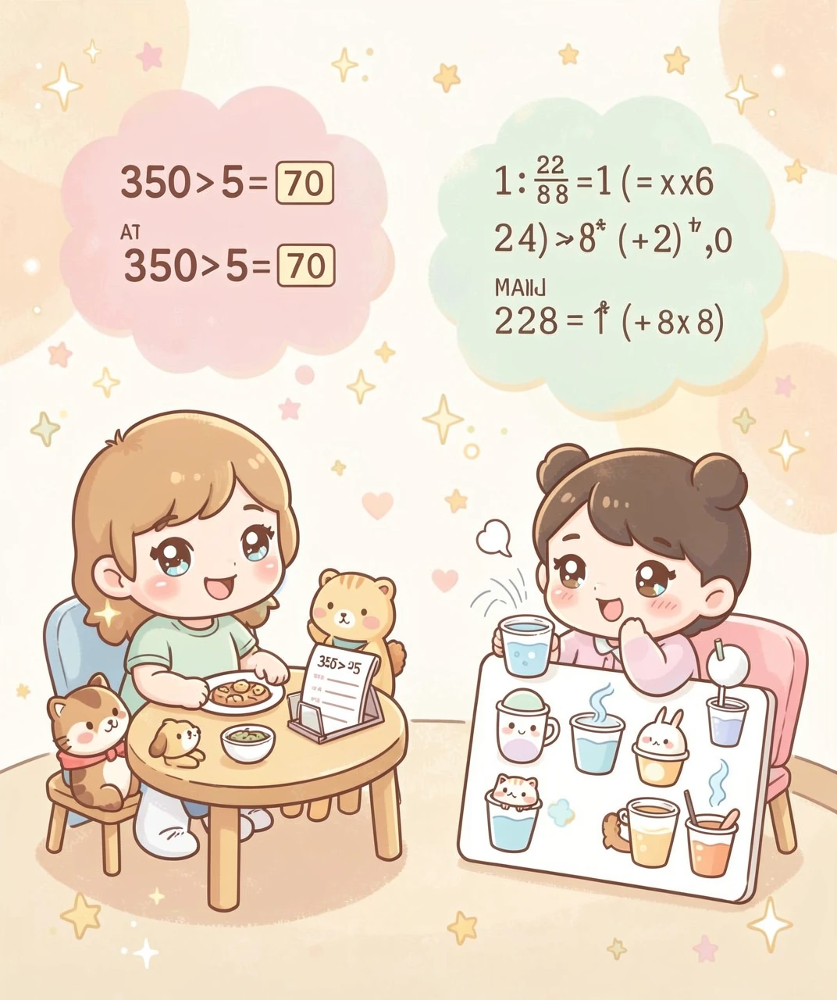

一个让数字说出故事的超级魔法！
小明班上有 30 个同学，体育老师说：「我们全班平均身高是 140 厘米。」小明看了看自己——正好 140 厘米！可他的好朋友小刚却有 152 厘米，旁边的小红只有 128 厘米……小明纳闷了：明明没有几个人刚好是 140 厘米，为什么老师说「平均」140 厘米呢？
平均数不是「大多数人的值」，而是一个用来代表整体水平的数字！它就像一个公平的代表，把所有人的身高加起来，再平分给每个人。虽然真实的同学们有高有矮，但 140 厘米等于告诉大家：「这批小朋友整体上大概有这么高！」
🎨 图1：班上的同学有高有矮，虚线那条就是「平均身高」！
怎么算出平均数？非常简单！记住这个口诀：
举个例子吧！小明本周 5 天吃了西瓜片数分别是：3、5、4、6、2。他一共吃了多少片？
3 + 5 + 4 + 6 + 2 = 20 片
再除以 5 天：20 ÷ 5 = 4 片
所以小明平均每天吃 4 片西瓜 🍉——虽然他实际不是每天都吃 4 片，但 4 是我们对五天情况的「平均描述」。
平均数把零散的数字浓缩成了一个数，让我们能一眼看出整体趋势！
🎨 图2：5 天的西瓜数加起来，再平分——这就是平均数！
你听过这些说法吗？
📊 「中国人平均每天看手机 3 小时」
📊 「杭州市民平均每人拥有 1.3 辆自行车」
📊 「小明班数学平均分 88 分」
📊 「本月的平均气温是 25°C」
这些全都是平均数在工作！科学家把它称为集中趋势——找到了那个最能代表一整群数据的数字。我们可以用它来：
✅ 比较两个班的学习成绩
✅ 比较不同城市的消费水平
✅ 判断一个人是高于还是低于平均水平
✅ 把庞大数据缩到一句话里就能讲清楚
🎨 图3：分数、气温、身高——生活中到处都是平均数！
平均数很棒，但如果数据里有个怪兽级的极端值，它就有麻烦了！
来玩个游戏：5 个小朋友的零花钱分别是 5元、6元、7元、8元和 500元。平均一下是多少？
(5 + 6 + 7 + 8 + 500) ÷ 5 = 526 ÷ 5 = 105.2 元
哇！105.2 元！可 5 个人里只有一个人的零花钱超过 9 元，剩下 4 个人都不到 9 元！说「他们平均有 105.2 元」简直在开玩笑——好像大家都很有钱似的。这就是极端值扭曲平均数的经典案例。
当数据里有一个超级大或超级小的数字时，光看平均数可能会被骗！聪明的你应该学会：
🔍 先看数据里有不有特别离谱的数
🔍 如果数据差异很大，可以用「中位数」（中间那个数）配合判断
🔍 不要把平均数当成唯一真理！
🎨 图4：一个有钱的小伙伴把平均数拉到天上去了！
恭喜你已经掌握了平均数的魔法！现在来挑战两个真实问题：
问题1：你和 4 个朋友去吃自助餐，总账单是 350 元。如果AA制，每人应付多少？
💡 350 ÷ 5 = 70 元 —— 你刚用平均数算了 AA 制！
问题2：妈妈记录了最近一周的水杯饮水次数：6、7、5、8、7、9、7。她「一般每天喝几杯」？
💡 (6+7+5+8+7+9+7) ÷ 7 = 49 ÷ 7 = 7 杯 —— 你帮妈妈找到了饮水习惯！
平均数不是什么魔法——它就是把一堆积木堆起来，然后均匀分配给每个人，看看每个人能得多少。掌握这个思维，你就能用数字读世界！

🎨 图5：学会了平均数，你也能像超级大脑一样思考！